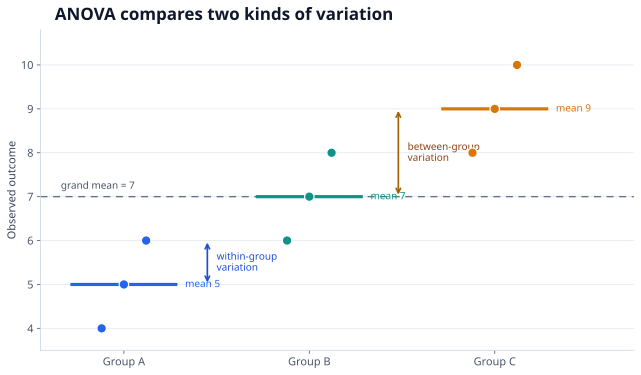

Analysis of variance (ANOVA)
ANOVA asks whether several group means differ by comparing variation between groups with variation within groups.
One question for several means
Suppose three training methods produce three sets of test scores. The one-way ANOVA null hypothesis is that all population means are equal; the alternative is that at least one differs:
Testing each pair separately at the same significance level gives several chances for a false positive. ANOVA begins with a single omnibus test of the overall difference. A significant result does not say which pairs differ.
Why compare two variances?
For observation $j$ in group $i$, the one-way model is $Y_{ij}=\mu_i+\varepsilon_{ij}$. If the group means truly are equal, differences among the sample means should mostly reflect the same noise that makes observations vary around their own group means. ANOVA compares those two sources of variation:
Here $n_i$ is the size of group $i$, $\bar y_i$ its sample mean, $\bar y$ the overall mean, and $N=\sum_i n_i$. The total squared variation separates exactly into these two parts. Divide each sum of squares by its degrees of freedom, then form the F ratio:
Under the classical assumptions and $H_0$, $F$ follows an $F_{k-1,N-k}$ distribution. A large ratio means the group means are far apart relative to the variation inside groups.
A small worked example
Take three hypothetical groups: A has scores 4, 5, 6; B has 6, 7, 8; C has 8, 9, 10. Their sample means are 5, 7, and 9, while the grand mean is 7. The figure shows both kinds of variation.

| Source | Sum of squares | Degrees of freedom | Mean square |
|---|---|---|---|
| Between groups | 24 | 2 | 12 |
| Within groups | 6 | 6 | 1 |
| Total | 30 | 8 | — |
Thus $F=12/1=12$, with 2 and 6 degrees of freedom. Under the classical model, $p=0.008$: there is evidence that the three population means are not all equal. The sample is deliberately tiny and tidy; a real analysis needs diagnostics as well as the test statistic.
What the result does and does not say
A one-way ANOVA assumes independent observations, normally distributed errors within groups for the exact small-sample F test, and a common error variance across groups. Independence depends mainly on how data were collected; a plot or p-value cannot repair dependence from repeated measurements on the same person. If variances differ substantially, Welch's ANOVA is an alternative to the pooled-variance F test.
Rejecting $H_0$ identifies an overall difference, not the differing pairs or the practical size of the effect. If pairwise comparisons are the next question, use a procedure that accounts for the family of comparisons, such as Tukey's method for all pairwise group means or a suitable multiple-testing adjustment for planned contrasts. See Multiple hypothesis testing for why the number of tests matters.
ANOVA is a statistical analysis, not an experimental design by itself. Causal language also requires an appropriate assignment or identification strategy.